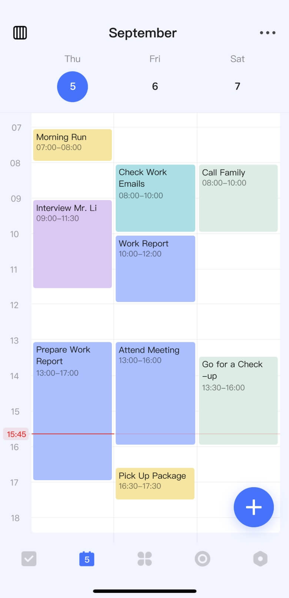
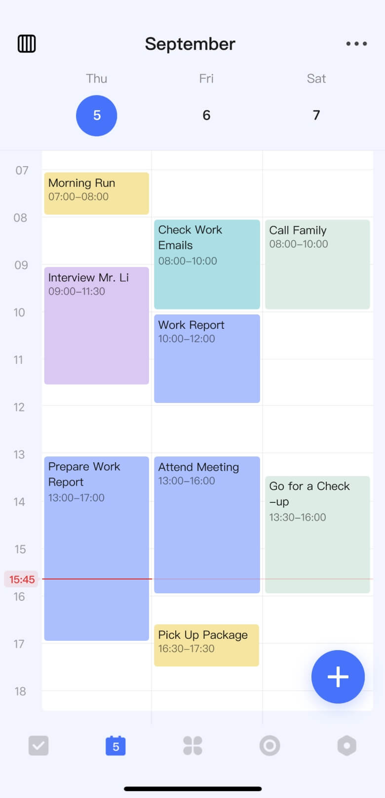
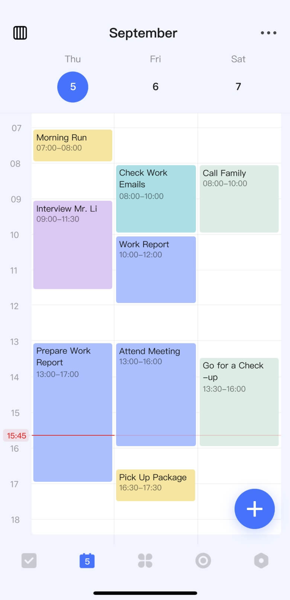

Taskify helps you manage your day, your way.

Whether it's work projects, personal tasks, or study plans, Taskify helps you organize and confidently tackle everything in your life.
Different calendar views like monthly, weekly, daily, and agenda offer diverse choices for planning your time more efficiently.
Adopt the popular "Pomodoro Technique"—break tasks into 25-minute intervals to stay focused and achieve a productive flow.
A rich habit library, flexible tracking options, and thoughtful data review help you build good habits effortlessly and lead a fulfilling life.